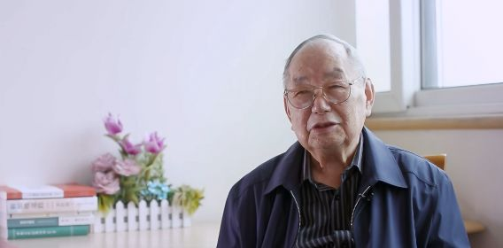
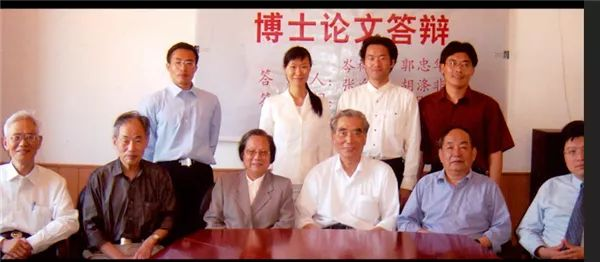
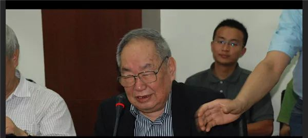

收录于合集
中国著名政治学家王邦佐先生于2021年8月24日逝世，享年87岁。“实事求是、留有余地”是王邦佐先生一生的准则，先生驾鹤西去，是中国政治学界的一大损失。王邦佐先生千古！

王邦佐：“实事求是、留有余地”是我一生的行事准则
本文转载自“澎湃新闻”
非经注明，文中图片来自网络
王邦佐教授对改革开放后中国政治学学科恢复与发展、马克思主义政治学的建设性阐释和中国政治发展研究作出开拓新贡献。其代表作为《政治学与当代中国政治研究》。

国内政治学专业出身的人，大概没有人不知道王邦佐的大名。1934年，王邦佐出生于湖北汉阳县，父亲在汉口当店员，母亲在家乡种田。小时候的王邦佐当过放牛娃。九岁那年，他的父亲病故，从此家境每况愈下，两个弟弟因病无钱医治而死。在走投无路的情况下，王邦佐的母亲求助在上海的姑妈和堂兄，本想让他去做童工，后因长得瘦又不懂沪语而未能如愿，只好找了所小学继续读书。后来上海解放，王邦佐依靠助学金读完了初中。初中毕业后，家里安排他去当工人。班主任后却认为“辍学可惜”，并表示资助他完成学业。在多方帮助之下，王邦佐得以读完高中，考入复旦大学历史系，并留校任教。
“文革”结束以后，政治学这一学科得以恢复，邓小平呼吁：政治学“要赶紧补课”。当时，王邦佐担任复旦大学国际政治系副主任，与孙关宏、曹沛霖等人一起，开始了“补课”工作。1980年，他们在复旦大学国际政治系成立了政治学教研室，次年，复旦大学正式招收政治学专业本科生，这是“文化大革命”后全国招收的第一届政治学本科生。此后，又逐步招收了硕士和博士研究生。
1982年，在王邦佐的主动请缨下，复旦大学国际政治学举办了全国第一期政治学讲习班，为22个省市培养了60多名学术骨干。这一次的讲习班，被学术界戏称为“新中国政治学的黄埔一期”。在近半个世纪的教学与研究中，王邦佐可谓成绩斐然。他不仅讲授过“政治学概论”、“国际政治概论”、“比较政治学”、“政治学名著选读”等课程，还组织编写了《政治学概要》、《马克思主义政治学》、《政治学》等政治学教科书，并撰写、主编著作20多部，发表论文150余篇，可谓是开山鼻祖式的人物。学术之外，王邦佐还是一名教育家，曾任国际政治系主任、校长办公室主任。1986年调任上海师范大学，担任校长近十年之久。
1995年5月27日，王邦佐在复旦大学九十周年校庆上发言
10月的上海，天已微凉。记者在华东医院见到了正在此住院疗养的王邦佐先生，尽管已是85岁高龄，前些日子还做了手术，但他的精神依旧很好。对于艰苦的童年和少年时光，他不愿多提。但回首自己辉煌的学术生涯，说到自豪和得意之处，他却会像个孩子般“嘿嘿”地笑。在近两个小时的采访中，澎湃新闻（www.thepaper.cn）记者与之聊到了治学经历、学术研究与行政工作的平衡以及人生态度等诸多问题，以下为采访部分。
从历史学到政治学
澎湃新闻： 您当年考的是复旦大学历史系，为什么会选择历史系呢？我看过您1960年登载在《史学月刊》上谈清末新政的文章，是很典型的历史学研究。您后来又是怎样开始从事政治学的研究的呢？历史学的学术训练对您后来的政治学研究，有什么帮助？
王邦佐： 我当年考大学，第一志愿其实是新闻系，觉得做记者可以背着照相机到处走，这很吸引我。后来成绩不够，只好选了历史系。但其实我小时候就很喜欢看历史，觉得没有哪个专业像历史这么丰满，古今中外、上下几千年，无所不包。历史是一切学科的基础，比如你一个国际政治系的学生，能不学历史么？做国际关系，能不了解国际关系史么？你不懂历史，怎么理解现在呢？
我读书的时候，历史系里当时有二十多位非常优秀的教师，周谷城、谭其骧等等。但那时候运动比较多，受运动的干扰，其实花在学术上的时间不是那么多，但我这个人运气比较好，到了关键时候总有人帮助我。比如你刚刚提到的清末新政那篇文章，写那篇文章的时候我还是三年级的学生，花了一年多的时间，在老师的指导下修改完成的。当时老师就教我们一些基本功，比如如何找资料、注释的规矩、做卡片、如何读古书这些。其实我在班级里学的不是最好的，我们当时九十多个同学，我就是三十名左右吧。
我爱人开玩笑跟讲，你们搞政治的写文章，一晚上拍脑袋就拍出一篇文章来。但历史系写文章，从确定选题到找资料，要酝酿很长时间。
我最开始其实很不关心政治的，还闹过大笑话。有一次反右斗争的时候，报纸上写我们复旦外文系的一个老师，到处放火。我就纳闷，问别人，说他放火干什么，他在哪里放火了？别人听了就笑了，都不愿回答我。这个事情给我刺激很大，觉得自己不行，很多事情都不知道。因为我们基础不好，不像有的学生，他的祖父、父亲都是搞学问的，书香门第。
澎湃新闻： “文革”结束以后，政治学学科得以恢复，1981年复旦大学国际政治学筹办了全国第一期政治学讲习班，堪称“新中国政治学的黄埔一期”，从其中走出来的很多学员后来都成了各个高校政治学学科的顶梁柱，您能否为我们回顾一下第一期政治学讲习班的台前幕后？
王邦佐： 讲习班取得的成绩远远出于了我们的意料。事情要从1980年说起，1980年12月，中国政治学会在北京成立。当时最为紧缺的就是政治学研究的专门人才。1981年，当时的会长张友渔主持开会，讨论如何解决人才培养问题。我们讨论认为，当务之急是开办政治学讲习班，培养人才。我在会上说，要不然我们来试试看。后来，学会综合考虑上海的师资力量、学术基础等各方面条件，决定将全国第一期政治学讲习班委托复旦大学国际政治系举办。
全国一共来了六十几个人，整整半年时间，上了几十门课，形成了良好的风气。这些学生后来都是各个学校政治学学科的骨干。其实更重要的是，形成了教学体系，形成了我们自己的一套规范和标准。别人说“黄埔一期”，我觉得有点过誉了。但是这个讲习班，对于我们国家政治学的恢复和发展，确实是一个里程碑的作用，这也是我这辈子比较自豪的一件事儿。那时我们讨论了很多问题，比如“政治学是什么”“政治是什么”，这些概念和马克思主义的观点是什么关系，马克思主义的解释和这些观点能不能统一起来。对这些问题，当时大家没有一致的看法，但是互相争论，畅所欲言。当时还有人说，中国没有政治学，我说中国怎么会没有政治学呢，中国有几千年历史，这里面的政治史，不都是政治学么，只是说我们没有像西方那样把政治学单独作为一个学科来研究。我和孙关宏一起写了篇文章《<共产党宣言>是马克思主义政治学的大纲》，说马克思主义政治学的纲目，在共产党宣言里面都形成了，当时引起很大争论，后来越来越多人同意了我们的观点。
第一期政治学讲习班合影，第一排左二为王邦佐
还有一些现实问题的讨论，比如“拨乱反正”，也是很重要的问题，是不是前三十年的都错了？错在哪里？为什么会犯错？那时候我们天天争论这些，寻求这些问题的答案。政治学研究有个很大的特点，和政治气候相关。某个时期关心这个问题，某个时期关心那个问题，这都是有道理的，不是突然而然的。现在为什么这么多人在关心国际问题？因为中美关系、贸易战嘛。
澎湃新闻： 回顾您的学术生涯，既有对政治学学理、基本问题的诸多讨论（比如什么是政治、马克思主义政治学的内涵、政党问题研究等等），同时您也一直关心着现实政治的走向，比如对“一国两制”问题，中国特色社会主义民主政治问题、政治体制改革、社会主义市场经济等问题都有着诸多论述，在这其中，您最关心的是哪些？
王邦佐： 最关心的，还是党的问题，我之前写过一本书，《中国共产党统一战线史》。过去我们讲统战，比较多的是讲我们共产党如何团结民主党派，但另外一点，很重要，民主党派为什么要跟你团结，他们有他们的要求。我就重点研究民主党派的要求。
还有比说一国两制的问题，“一国两制”刚提出来的时候，有人说一国两制是上海两个王（王邦佐、王沪宁）提出来的，这不是胡说八道吗？实际上我们仅仅是讨论了主权和治权的关系。小平同志提出“一国两制”之后，大的方向有了，一些具体的分析和阐述，就是我们这些人的任务了，主权、治权的关系是一国两制的核心内容，开始很多人不理解，后来很多人接受了我们的分析。
是学者，也是教育家
澎湃新闻： 您不仅是一位杰出的学者，后来还担任了复旦国政系系主任以及上海师范大学校长，发掘、培养、提携了不少年轻学者，比如浦兴祖、王沪宁、孙嘉明等等，您是如何平衡学术研究和行政工作的呢？
王邦佐： 我们那个年代，叫我们干什么就干什么。我读书的时候，历史系是五年制，四年级的时候，学校叫我就去了马列主义教研室——就是现在的国际政治系——当辅导员，当时我自己还要上课，还要写论文，觉得很辛苦，忙不过来。当时负责行政的张庆华老师跟我说，你要不要发展，要不要进步？我说我太忙了。他说你比我还忙吗？他当时是党委常委，工会主席。他说，你最多星期六少看几场电影嘛。确实，我们那时候也没什么文娱活动。他跟我说，像谷超豪啊他们，都是从双肩挑成长起来的。又要做科研，又要做行政。这样一来我就不好再说什么了。后来国际政治系刚刚成立，征求我意见，问我愿不愿意当老师，我当然是求之不得，我心想一个放牛娃，能走上复旦大学的讲台，实在是不敢想象。

博士论文答辩现场
我做行政工作，跟学生打交道，心得就是要相信学生、打成一片。如果学生犯了点小错误，我来承担责任。我最开始做学生工作的时候，和他们年纪也差不多，都跟兄弟一样。那时候让我当辅导员，我想着要了解他们，就要跟他们住一起。那时的宿舍是八个床，我叫别人空一个出来，留给我。开始他们不欢迎，觉得住了个辅导员进来，不自由了。做辅导员的时候，我的生活就一直是这样，包括后来人民大学的党委书记程天权他们，都是我的学生，我们住一个宿舍，星期六晚上是最开心的时候，大家聚在一起，吹牛，也聊社会上各种各样的问题。
我这个人，因为受到人家的帮助太多了，所以我对别人也是以诚相待。我原来在学校，人家不叫我老师、校长，很多都喊我王邦，一般这么喊我的，都是跟我比较熟悉，关系比较好的。
教育本身有它自身的规律，我们现在时常忽视规律，空谈一些政策，比如说今年招生怎么弄，明年怎么弄，都在这些事情上动脑筋，而不是在教学上动脑筋。还有，现在师生关系变得比较疏远，很多学生不敢去老师家里请教问题，这还能学好么？
做行政工作，一定要把握好分寸。过去说精神污染，这确实有，但不能夸大。我当时在上师大做校长，有人主张查学生的毕业论文。我说这有什么好查的，有这个必要么？
还有就是，不同学校有不同学校的情况，要因地制宜地处理问题。比如上师大和复旦就有很大的区别，举个最简单的例子：进复旦的门，比较多的是看到布告，什么讲座；上师大的布告，都是什么好电影、什么活动，很不一样。
做教育工作，一定要明白学生在想什么。比如我在上师大当校长的时候，有一天，一批女学生，外文系的，来敲我的门说有事情汇报。我说什么事情啊。她们说，为什么从一年级到现在，一直安排女老师给我们上课，一个男老师都没有？我说这也是个问题么？后来她们笑了，说校长啊校长，这个问题你都没有研究啊。这个事情对我刺激很大。
我当校长的时候，还有个规定，女生不准穿超短裙。结果有学生过来找我，说，短裙离开膝盖多少算短？淮海路还有人穿高开叉旗袍上街呢，为什么学校里不允许？我说很简单啊，我们是上海师范大学，以后是要为人师表的。淮海路上人家穿旗袍，她穿泳装也行，那是人家的自由。但是在学校里不允许，后来被我这么一说，也就接受了。师范大学的学生，应该对自己有严格要求，衣着打扮，要像老师的样子。
“实事求是，留有余地”
澎湃新闻： 回首您的一生，有没有什么人生信条或是座右铭？
王邦佐： 建国以后，复旦的历任校长我都打过交道，除了第一任和现任，他们给了我很大的启发。
比如苏步青跟我说，“名师出高徒”是不对的，真正是“高徒出名师”。我们做老师的，最后对我们的评价，其实都看我们能教出怎样的学生。现在我在医院住院，经常有人来看我，说我是某某人的老师说，我也就笑笑。
谢希德校长对我的影响也很深，我很尊重她。我去上师大当校长前，在复旦当校长办公室主任，有一天我找到她，说，我要走了，你能不能给我留几句话，给我些建议。她说可以啊，你不是经常讲实事求是吗。我说对啊，她说我再送你四个字，叫“留有余地”。比如一个学生犯了错误，考试作弊了，你是一棍子打死呢，还是留有余地，给他一个改过的机会？后来我在上师大当校长，有学生作弊被发现了，我就让他们写深刻的检讨，放在我这里，之后如果表现好的话，我就撕掉，要是表现不好，毕业的时候就留在档案里。
老一辈的人处理问题的水平也很让我佩服。当时在复旦大学校门的左边，有一个留学生楼，留学生楼外面有个草地。很多外国女学生穿的很少，躺在草地上晒太阳。草地对面还有个理发店，就有很多中国学生跑到理发店里，东张西望。我就跟谢希德校长汇报，说影响很不好，建议不要再让留学生去那里晒太阳了。我以为她会支持我，结果没想到她说这有什么，国外这样的人多得很啊，她们喜欢晒太阳，就晒吧。结果过些天她让人在留学生楼边上放了一排躺椅，留学生就去那里晒太阳了。那边是留学生楼，我们的学生过不去，也看不着了。有很多这样很小的事情，你如果动脑筋去领悟，就会收获很多。
一个学校，要形成自己的学派、风格。过去说要成立复旦学派，别人笑话，事实上现在已经在在成气候了。但复旦和北大比，北大始终是领头羊，我当时就说，不要老说超过北大这些口号。我在上师大的时候也是，别人说要赶超华师大。我说怎么赶得上？怎么超得过呢，人家那么多专业，那么多经费。但我们有个口号，单项冠军越多越好。现在事实证明，上师大很多很有影响力的学科，比如苏志良老师的慰安妇研究，都是当时酝酿出来的。这就是实事求是，发挥自己的优势。

2013年5月22日，王邦佐在复旦国务学院政治学系研讨会上发言
实事求是，留有余地。我一生中碰到事情太多了，表扬一个人就好得不得了，批评一个人就坏得不行。我在上师大当校长的时候，我们的毕业生、实习生在中学里实习的，带着耳环、金手链、金手镯，金光四射，后来有人就写信到教育局说上师大的学生不注意仪表，上课的时候穿得富丽堂皇，影响不好。这个意见我们当然可以接受，但后来了解到这个孩子是少数民族，这些打扮不是真的金首饰。我们就特别做了说明，上报到教育局，也做了这个学生的工作，误解就这么解除了。有问题就要解决问题，一定要实事求是，但也要留有余地。
好好学习，天天“在看”